UNIVERSIDADE FUMEC
CURSO DE CIÊNCIA DA COMPUTAÇÃO
DESENVOLVIMENTO WEB FRONT-END
PROF. DÂNGELO SILVA MIRANDA
KAIQUE FERREIRA PEIXOTO
Services, requisições HTTP e formulários reativos
Belo Horizonte
2026
Kaique Ferreira Peixoto (trabalho individual).
Nome: CardVault JP.
Objetivo: oferecer a colecionadores e lojistas um ambiente único para gestão, catalogação, avaliação e negociação de cartas colecionáveis de Pokémon TCG, com foco em coleções japonesas e itens de nicho. Esta é a última etapa do projeto: a aplicação Angular 22 (baseada em NgModule) do Trabalho 02 deixou de usar dados em memória e passou a armazenar tudo em uma base de dados acessada por uma Web API (JSON-Server), com todas as operações feitas por requisições HTTP (HttpClient) dentro de classes service. Todos os formulários foram reescritos como formulários reativos com Validators. As cartas, nomes e coleções continuam fictícios e as artes são gradientes CSS.
Principais funcionalidades desta versão:
GET /cards?q=...&raridade=...), com busca reativa (debounceTime + switchMap);/cards/:id (GET /cards/:id) com histórico de preço real, gravado pela API;POST, PUT, DELETE) com regras de negócio no service (duplicidade de número, histórico de preço);POST /propostas) e aceite/recusa no dashboard (PATCH);/usuarios), com validador assíncrono que impede e-mail repetido e sessão persistida;POST /mensagens);Validators e validadores próprios, mensagens de erro/acerto por campo e bloqueio de envio enquanto houver campo inválido.cardvault-jp/
├── prototipo/, relatorio/ (Trabalho 01)
├── docs/ prints-final/ + este relatório
└── app/ projeto Angular 22 (NgModule, zoneless)
├── api/db.seed.json dados iniciais da Web API (JSON-Server)
├── scripts/prepare-db.mjs cria/restaura api/db.json
└── src/app/
├── app.module.ts provideHttpClient + interceptor, SharedModule
├── app-routing.module.ts rotas públicas + /admin (lazy + guard)
├── api.config.ts API_URL = http://localhost:3000
├── admin/ AdminModule (lazy): admin-cards/, dashboard/
├── shared/ SharedModule e validadores.ts
├── guards/ admin.guard.ts (CanMatchFn)
├── interceptors/ erro-api.interceptor.ts
├── services/ card, auth, proposta, mensagem
├── models/ card, usuario, proposta, mensagem
├── pipes/ conservacao.pipe.ts
├── components/navbar/
└── pages/ catalogo/, detalhe-card/, login/, sobre/
Como executar: dentro de app/, npm install; em um terminal npm run api (JSON-Server em http://localhost:3000) e em outro npx ng serve (aplicação em http://localhost:4200). O comando npm run api:reset restaura os dados iniciais. Usuários de teste: cliente@cardvault.jp / cliente123 e admin@cardvault.jp / admin1234.
| Recurso | Estrutura | Requisições usadas |
|---|---|---|
/cards | id, nome, colecao, numero, tipo, raridade, idioma, variante, estado, preco, estoque, ano, gradiente, dataCadastro, historico [{mes, valor}] | GET (com q, filtros e _sort), GET /:id, POST, PUT, DELETE |
/usuarios | id, nome, email, senha, perfil ('cliente' | 'admin') | GET ?email=&perfil=, POST |
/propostas | id, cardId, cardNome, nome, email, valorOferecido, mensagem, status ('pendente' | 'aceita' | 'recusada'), data | GET, POST, PATCH (status) |
/mensagens | id, nome, email, assunto, mensagem, data | GET, POST |
O arquivo versionado é o api/db.seed.json (12 cartas com 10 meses de histórico, 2 usuários e 1 proposta). Na primeira execução, npm run api copia o seed para api/db.json, que é o arquivo alterado pelo JSON-Server e fica fora do Git.
| Service | Métodos | Regras de negócio |
|---|---|---|
| CardService | listar(), buscarPorId(id), pesquisar(termo, filtros), listarColecoes(), cadastrar(dados), editar(id, dados), excluir(id), estatisticas(), variacaoPreco(card) | Valida nome/coleção, preço > 0 e estoque ≥ 0 mesmo que o formulário seja burlado; impede dois cards com a mesma coleção e número; gera data de cadastro; ao mudar o preço, registra o novo valor no histórico do mês (até 12 meses); calcula os indicadores do dashboard. |
| AuthService | login(email, senha, perfil, lembrar), registrar(nome, email, senha), emailDisponivel(email), logout(), signals usuario, estaLogado, isAdmin | Normaliza o e-mail; novo cadastro sempre com perfil cliente; nunca guarda a senha na sessão; "lembrar de mim" usa localStorage, senão sessionStorage. |
| PropostaService | listar(), enviar(proposta), alterarStatus(id, status) | Toda proposta nasce "pendente" com a data do dia; a alteração usa PATCH só no campo status. |
| MensagemService | listar(), enviar(mensagem) | Registra data e hora do envio. |
Todos os métodos retornam Observable e usam HttpClient (get, post, put, patch, delete) com HttpParams para os filtros. Os componentes nunca chamam a API diretamente. O interceptor erroApiInterceptor converte erros HTTP em mensagens em português (por exemplo, "Não foi possível conectar à API. Verifique se o JSON-Server está rodando"), exibidas nas telas. Como a aplicação é zoneless, o estado das telas é guardado em signals, que avisam o Angular para redesenhar quando a resposta HTTP chega.
| Formulário | Validators |
|---|---|
| Cadastro/edição de card (admin) | required, minLength(3), maxLength(60), naoVazio (nome); required (coleção, raridade, tipo, idioma, estado); pattern do número (006/102 ou P-031); min(0.01) (preço); min(0) + inteiro (estoque); min(1996)/max(ano atual); maxLength(40) (variante) |
| Login | e-mail obrigatório com pattern (domínio com ponto); senha required + minLength(8) |
| Cadastro de cliente | nome minLength(3); e-mail com validador assíncrono emailUnico (consulta GET /usuarios?email=); senha com 8+ caracteres, letras e números; validador de grupo camposIguais('senha', 'confirmacao') |
| Proposta (detalhe) | nome e e-mail obrigatórios; valor min(1) e max(2 × preço) definido dinamicamente com setValidators; mensagem maxLength(300) |
| Fale conosco (sobre) | nome minLength(3), e-mail pattern, mensagem minLength(10)/maxLength(500) |
| Busca do catálogo e filtro do admin | FormGroup/FormControl observados com valueChanges |
Cada campo mostra borda vermelha e a mensagem do erro quando está inválido e já foi tocado, e borda verde com "✓" quando está correto. Para impedir o envio de dados errados ao servidor, os métodos de envio verificam form.invalid (e pending, no caso do validador assíncrono), chamam markAllAsTouched() para revelar todos os erros e só então fazem a requisição; nos formulários de cadastro e proposta o botão também fica desabilitado enquanto o formulário é inválido. O FormsModule/ngModel foi removido do projeto.
| Caminho | Componente / ação | Acesso |
|---|---|---|
'' e ** | redirectTo /catalogo | — |
catalogo | CatalogoComponent | público |
cards/:id | DetalheCardComponent | público |
login | LoginComponent (aceita ?retorno=) | público |
sobre | SobreComponent | público |
admin → cards, dashboard | loadChildren: () => import('./admin/admin.module') | admin (canMatch: [adminGuard]) |
dashboard | redirectTo /admin/dashboard (compatibilidade) | — |
O adminGuard é um guard funcional (CanMatchFn): visitante não logado é enviado para /login?retorno=/admin/... e, após o login, volta para a página que tentou abrir; cliente logado é enviado ao catálogo. Por ser canMatch, o código do AdminModule (chunk separado de ~23 kB no build) só é baixado por administradores. A navbar também esconde os links Dashboard e Admin de quem não é administrador.
Os prints a seguir foram capturados com a aplicação e o JSON-Server em execução, na resolução 1440×900, usando Playwright. O mesmo roteiro automatizado validou 18 fluxos (busca, guard, cadastro, CRUD, propostas, mensagens), conferindo também o conteúdo gravado na API, sem erros no console.
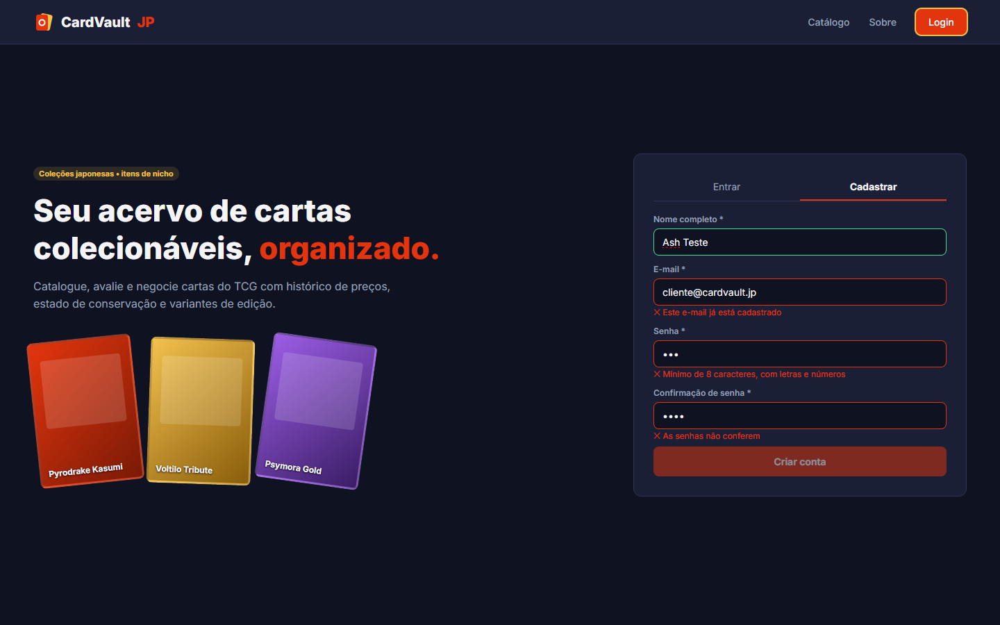
loginForm e cadastroForm, com abas alternadas por signal;GET /usuarios?email=&perfil=; "lembrar de mim" mantém a sessão após fechar o navegador;POST /usuarios; e-mail verificado na API enquanto o usuário digita ("Verificando disponibilidade..."); botão Criar conta desabilitado enquanto houver erro;?retorno=) ou segue para a página do seu perfil.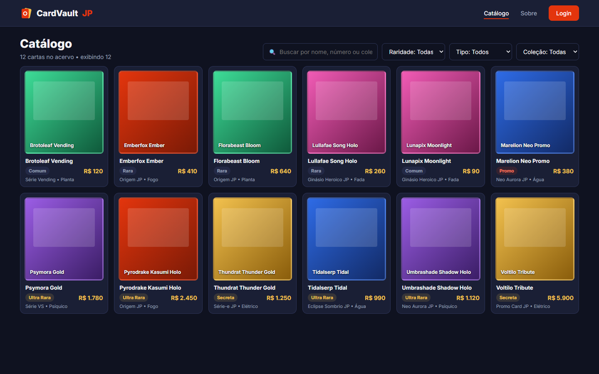
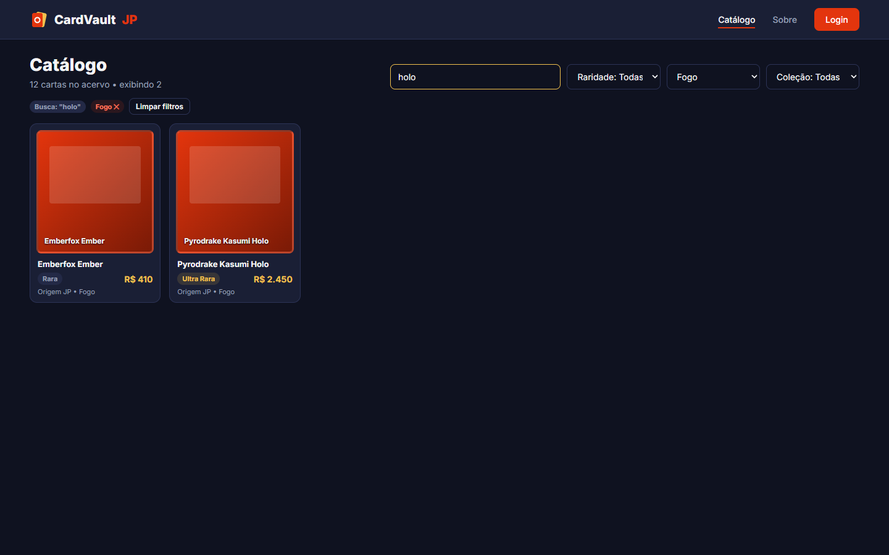
FormGroup; cada alteração gera GET /cards?q=holo&tipo=Fogo&_sort=nome;debounceTime(300) evita uma requisição por tecla e switchMap cancela buscas antigas;Router.navigate(['/cards', id]).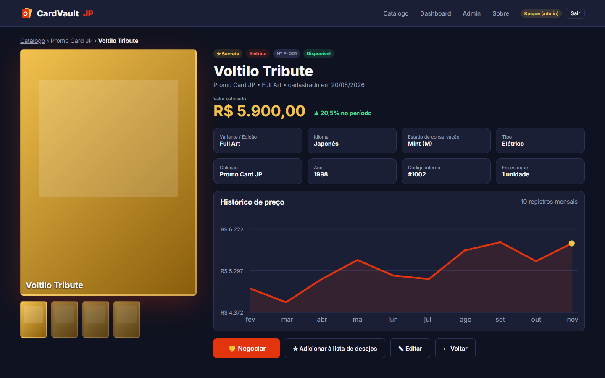
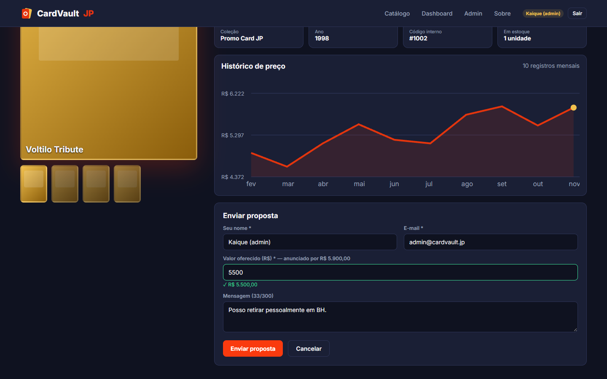
paramMap + switchMap buscam o card na API; mensagem quando o id não existe;historico salvo na API (não é mais simulado) e variação percentual do período;POST /propostas;/admin/cards?editar=id).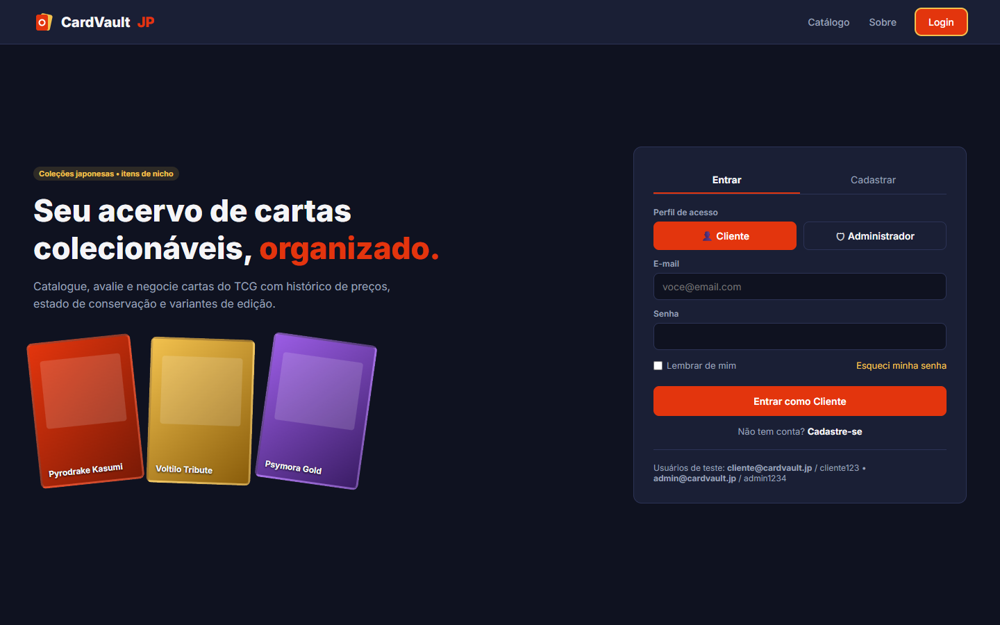
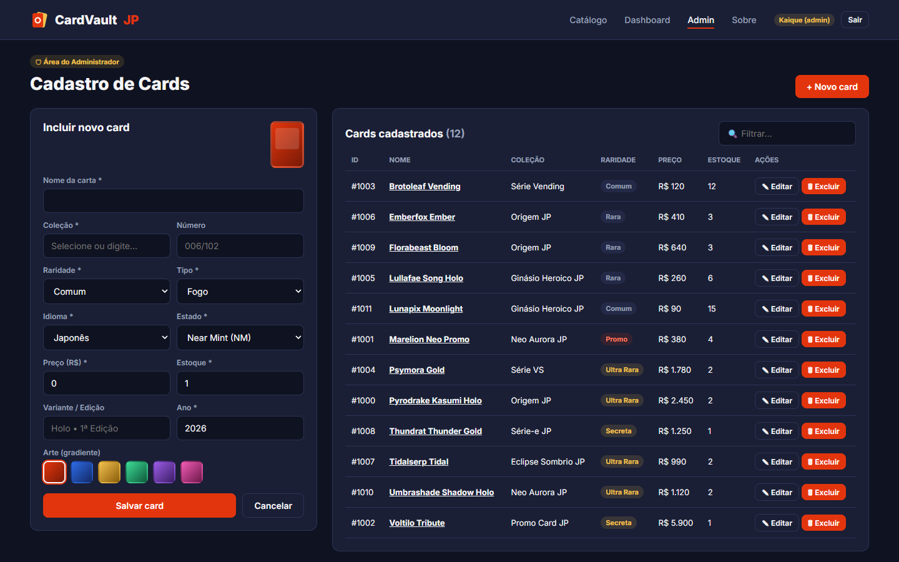
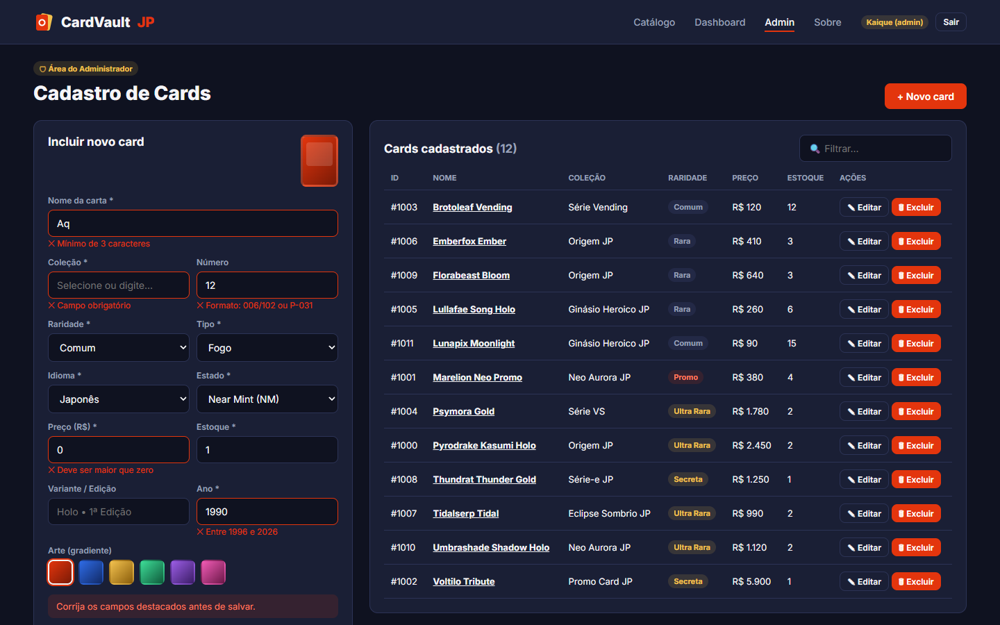
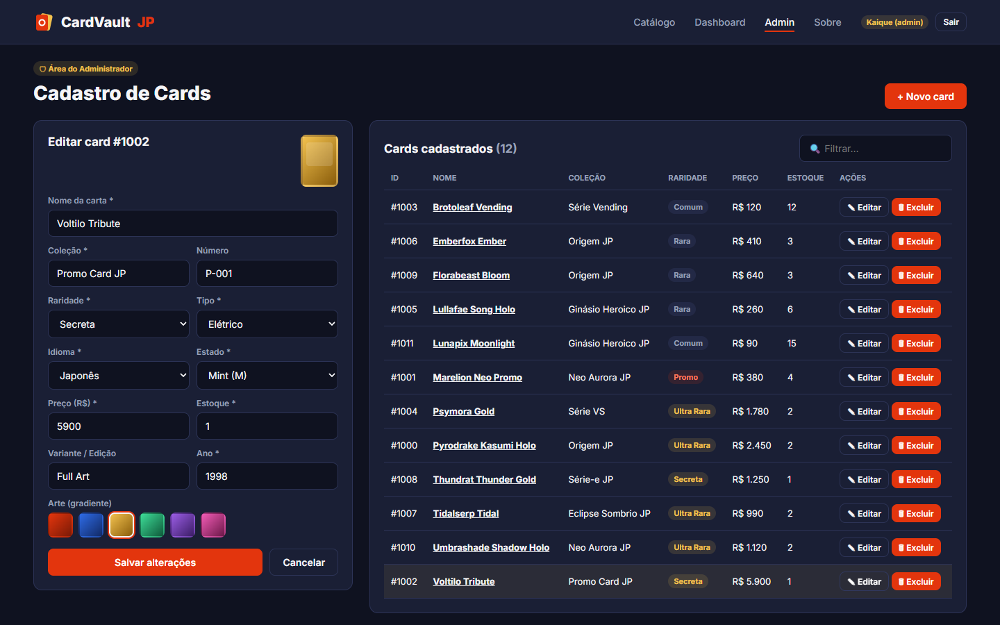
POST /cards), edição (PUT /cards/:id) e exclusão com confirmação (DELETE /cards/:id);FormControl (busca no servidor), prévia da arte em tempo real e botão de salvar desabilitado durante a requisição.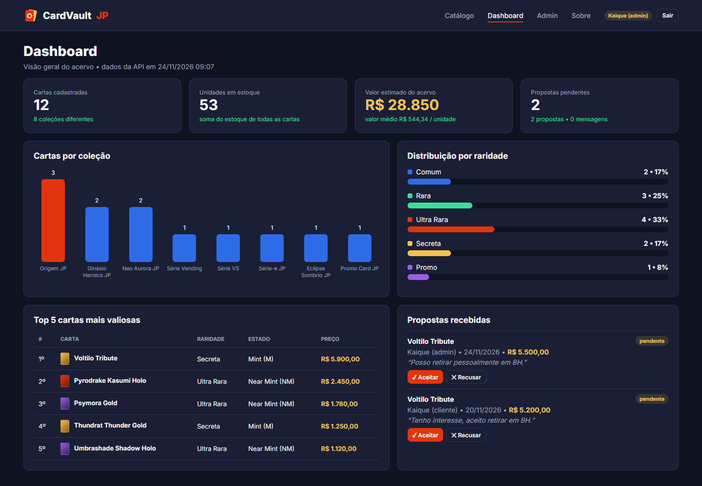
forkJoin busca cards, propostas e mensagens em paralelo;PATCH /propostas/:id), atualizando o status na hora.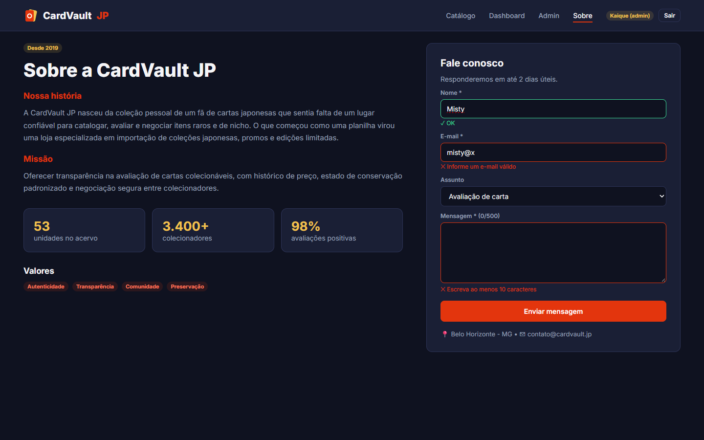
POST /mensagens;Repositório: https://github.com/IsseiSenju/cardvault-jp
GitFlow: cada bloco foi feito em uma branch feature/* criada a partir da develop e integrada com merge --no-ff. Ao final, a develop foi integrada na main e marcada com a tag v1.0.0.
| Branch (Trabalho Final) | Conteúdo |
|---|---|
| feature/json-server | Dependência json-server, base inicial (seed) e scripts npm da API |
| feature/http-services | Models, interceptor, CardService/AuthService com HttpClient, PropostaService e MensagemService |
| feature/reactive-forms | SharedModule, validadores e migração de catálogo, detalhe, login e sobre para reactive forms |
| feature/area-admin | adminGuard, AdminModule com lazy loading, admin e dashboard reativos, navbar por perfil |
| feature/documentacao-final | README, prints, este relatório, Kanban, slides e pacote de entrega |
Conventional Commits: mensagens no formato tipo(escopo): descrição (feat, build, chore, docs, merge), cada commit com uma única alteração lógica. Commits do Trabalho Final (git log --oneline, do mais recente para o mais antigo):
| Hash | Mensagem |
|---|
Após a geração deste relatório foram feitos ainda os commits que adicionam este PDF, o Kanban, os slides e o pacote de entrega, os merges finais e a tag v1.0.0.
_page/_limit);